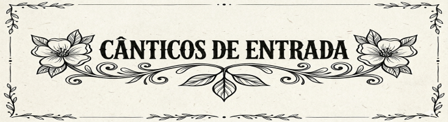

Entrada 1
Cristo ressuscitou, aleluia! venceu a morte com amor! Cristo ressuscitou, aleluia! venceu a morte com amor! aleluia!
1. Tendo vencido a morte, o Senhor ficará para sempre entre nós/ para manter viva a chama do amor que reside em cada cristão a caminho do Pai.2. Tendo vencido a morte, o Senhor nos abriu o horizonte feliz/ pois nosso peregrinar pela face do mundo terá seu final lá na casa do Pai.
Entrada 2
O Senhor ressurgiu, aleluia, aleluia! É o Cordeiro pascal, aleluia, aleluia! Imolado por nós, aleluia, aleluia! É o Cristo Senhor, Ele vive e venceu, aleluia!
1. O Cristo, Senhor ressuscitou, a nossa esperança realizou: vencida a morte para sempre, triunfa a vida eternamente!2. O Cristo remiu a seus irmãos, ao Pai os conduziu por sua mão; no Espírito Santo unida esteja, a família de Deus, que é a Igreja!
3. O Cristo, nossa páscoa se imolou, seu sangue da morte nos livrou: incólumes o mar atravessamos, e à terra prometida caminhamos!
Ato Penitencial 1
Como a ovelha perdida, pelo pecado ferida, eu te suplico perdão ó Bom Pastor. Kyrie eleison (3x) Como o ladrão perdoado, encontro o paraíso ao teu lado, lembra-te de mim pecador por Tua cruz. Christe eleison (3x) Como a pecadora caída, derramo aos teus pés minha vida, vê as lagrimas do meu coração e salva-me Kyrie eleison (3x)Ato Penitencial 2
1. Senhor que viestes salvar, os corações arrependidos. Piedade, piedade, piedade de nós (bis) 2. Ó Cristo, que viestes chamar os pecadores tão humilhados. 3. senhor que intercedeis por nós, junto ao pai que nos perdoa.Hino de Louvor
Glória, glória a deus nas alturas, ô ô glória, e a nós, a sua paz! Senhor Deus rei dos céus, Deus Pai onipotente, vos louvamos, bendizemos, adoramos, nós vos glorificamos, e nós vos damos graças por sua. Jesus Cristo Senhor Deus, filho único do Pai, Cordeiro de Deus que tirais o pecado do mundo, tende piedade. Vós que estais à direita do Pai, tende piedade de nós. Vós que tirais o pecado do mundo, tende piedade, acolhei a nossa súplica. Só Vós sois o Santo, o Senhor, o Altíssimo, só Vós, Jesus Cristo com o Espirito e o Pai.1º Domingo
Este é o dia que o Senhor fez para nós: alegremo-nos e nele exultemos!2º Domingo
Dai graças ao Senhor, porque ele é bom; eterna é a sua misericórdia!3º Domingo
Vós me ensinais vosso caminho para a vida; junto de vós felicidade sem limites4º Domingo
O Senhor é o pastor que me conduz; para as águas repousantes me encaminha5º Domingo
Sobre nós venha, Senhor, a vossa graça, da mesma forma que em vós nós esperamos!6º Domingo
Aclamai o Senhor Deus, ó terra inteira, cantai salmos a seu nome glorioso!Canta-se o Aleluia, na melodia que a comunidade escolher e faz-se na estrofe a antífona do dia
Aleluia (8x)1º Domingo
O nosso cordeiro pascal, Jesus Cristo, já foi imolado. Celebremos, assim, esta festa, na sinceridade e verdade.2º Domingo
Acreditastes, Tomé, porque me viste. Felizes os que creram sem tervisto!3º Domingo
Senhor Jesus revelai-nos o sentido da Escritura; fazei o nosso coração arder, quando nos falardes.4º Domingo
Eu sou o bom pastor, diz o Senhor; eu conheço as minhas ovelhas e elas me conhecem a mim.Ofertório 1
1. Em procissão vão o pão e o vinho, acompanhados de nossa devoção, pois simbolizam aquilo que ofertamos: nossa vida e o nosso coração. Ao celebrar nossa páscoa, e ao vos trazer nossa oferta, fazei de nós, ó Deus de amor, imitadores do redentor. 2. A nossa igreja que é mãe deseja, que a consciência do gesto de ofertar, se atualize durante toda a vida, como o Cristo se imola sobre o altar. 3. Eucaristia é sacrifício, aquele mesmo que Cristo ofereceu. O mundo e homem serão reconduzidos, para a nova aliança com seu Deus.Ofertório 2
Eu creio num mundo novo pois, Cristo ressuscitou! Eu vejo sua luz no povo, por isso alegre sou. 1. Em toda pequena oferta, na força da união, no pobre que se liberta, eu vejo ressurreição! 2. Na mão que foi estendida, no dom da libertação, nascendo uma nova vida, eu vejo ressurreição! 3. Nas flores oferecidas e quando se dá perdão, nas dores compadecidas, eu vejo ressurreição!Ofertório 3
1. Mão na Terra e o coração além deste céu/ E a semente que brota é um germe de eternidade/ Vai brotando, crescendo, esperando/ É a vida que vem despontar/ E este trigo maduro, a colheita o recolherá. Estar em Tuas mãos, ó Pai/ E a vida ofertar/ No pão e no vinho a Ti/ E o céu se abrirá./ Estar em Tuas mãos, Senhor/ E a vida entregar/ A minha oblação em Ti/ Se perderá, frutificará (4x) 2. Da videira a flor não restará, passará/ E o fruto da terra surgirá, brotará/ Pela força do vento, da chuva/ E do Sol que traz vida e calor/ Cada dia, crescendo e aprendendo a recomeçar.Santo
Santo, Santo, Santo! Senhor Deus do universo O céu e a terra proclamam A vossa glória! Hosana, Hosana nas alturas! Hosana, Hosana nas alturas! (2x) Bendito o que vem Em nome do Senhor. (2x)Comunhão 1
1. Antes da morte e ressurreição de Jesus,/ Ele, na ceia,/ quis se entregar:/ Deu-se em comida/ e bebida pra nos salvar. E quando amanhecer/ o dia eterno, a plena visão,/ ressurgiremos por crer,/ nesta vida escondida no pão. 2. Para lembrarmos a morte, a cruz do Senhor,/ nós repetimos,/ como ele fez:/ gestos, palavras,/ até que volte outra vez. 3. Este banquete alimenta o amor dos irmãos,/ e nos prepara/ a glória do céu:/ ele é a força/ na caminhada pra Deus. 4. Eis o Pão vivo mandado a nós por Deus Pai!/ quem o recebe,/ não morrerá:/ no último dia/ vai ressurgir, viverá. 5. Cristo está vivo, ressuscitou para nós!/ esta verdade/ vai anunciar,/ a toda terra,/ com alegria a cantar.Comunhão 2
Cristo, nossa páscoa, foi imolado, aleluia! Glória a Cristo, Rei ressuscitado, aleluia! 1. Páscoa sagrada! Ó festa de luz! Precisas despertar: Cristo vai te iluminar! 2. Páscoa sagrada! Ó festa universal! No mundo renovado é Jesus glorificado! 3. Páscoa sagrada! vitória sem igual! A cruz foi exaltada, foi a morte derrotada! 4. Páscoa sagrada! Ó noite batismal! De tuas águas puras nascem novas criaturas! 5. Páscoa sagrada! Banquete do Senhor! Feliz a quem é dado ser às núpcias convidado!Comunhão 3
Eu vim para que todos tenham vida, que todos tenham vida plenamente (bis) 1. Reconstrói a tua vida em comunhão com teu Senhor;/ Reconstrói a tua vida em comunhão com teu irmão:/ onde está o teu irmão, eu estou presente nele. 2. Eu passei fazendo o bem, eu curei todos os males./ Hoje és minha presença junto a todo sofredor:/ onde sofre o teu irmão, eu estou sofrendo nele. 3. Entreguei a Minha vida pela salvação de todos/ reconstrói, protege a vida de indefesos e inocentes:/ onde morre o teu irmão, eu estou morrendo nele. 4. Vim buscar e vim salvar o que estava já perdido./ Busca, salva e reconduze a quem perdeu toda a esperança:/ onde salvas teu irmão, tu me estás salvando nele. 5. Este pão, Meu corpo e vida para a salvação do mundo./ É presença e alimento nesta santa comunhão:/ onde está o teu irmão, eu estou, também, com ele. 6. Salvará a sua vida quem a perde, quem a doa./ Eu não deixo perecer nenhum daqueles que são meus/ onde salvas teu irmão, tu me estás salvando nele. 7. Da ovelha desgarrada eu me fiz o bom pastor./ Reconduze, acolhe e guia a que de mim se extraviou:/ onde acolhes teu irmão, tu me acolhes, também, nele.Final 1
1. Por sua morte, a morte viu o fim do sangue derramado a vida renasceu. Seu pé ferido nova estrada abriu e neste homem, o homem enfim se descobriu. Meu coração me diz: "o Amor me amou, e se entregou por mim.” Jesus ressuscitou. Passou a escuridão, o Sol nasceu, a Vida triunfou: Jesus ressuscitou. 2. Jesus me amou e se entregou por mim! os homens todos podem o mesmo repetir. Não temeremos mais a morte e a dor, o coração humano em Cristo descansou.Final 2
Eis que faço novas todas as coisas, que faço novas todas as coisas, que faço novas todas as coisas.(bis) 1. É vida que brota da vida, é fruto que cresce do amor, é vida que vence a morte, é vida que vem do senhor. (bis) 2. Deixei o sepulcro vazio, a morte não me segurou. A pedra que então me prendia no terceiro dia rolou. (bis)Final 3
1. Se acontecer um barulho perto de você/ É um anjo chegando para receber/ Suas orações e levá-las a Deus. Então, abra o coração e comece a louvar/ Sinta o gosto do céu que se derrama no altar/ Que o anjo já vem com a bênção nas mãos. Tem anjos voando neste lugar/ No meio do povo, em cima do altar/ Subindo e descendo em todas as direções/ Não sei se a Igreja subiu ou se o céu desceu/ Só sei que está cheio de anjos de Deus/ Porque o próprio Deus está aqui 2. Quando os anjos passeiam, a Igreja se alegra/ Ela canta, ela chora, ela ri e congrega/ Abala o inferno e dissipa o mal Sinta o vento das asas dos anjos agora/ Confia irmão, pois é a tua hora/ A bênção chegou e você vai levar.Regaço acolherdor
Ó, minh'alma/ Retorna à tua paz/ Como criança bem tranquila/ No regaço acolhedor de sua mãe (2x) Minha mãe é a Virgem Maria/ É Ela que agora vai/ Me acolher, me abraçar/ Me perdoar, me compreender. Me acalmar, me ensinar, me educar/ Me formar, me amarMãezinha do Céu
1. Mãezinha do céu, eu não sei rezar/ Eu só sei dizer: Eu quero te amar Azul é seu manto, branco é seu véu/ Mãezinha eu quero te ver lá no céu (2x) 2. Mãezinha do céu, Mãe do puro amor/ Jesus é teu Filho, eu também o sou. 3. Mãezinha do céu, vou te consagrar/ Minha inocência, guarda sem cessar.